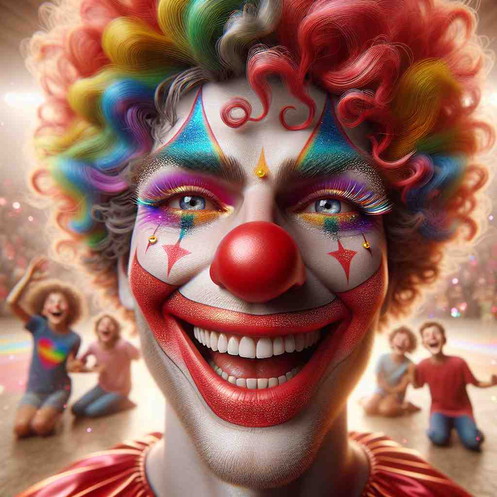
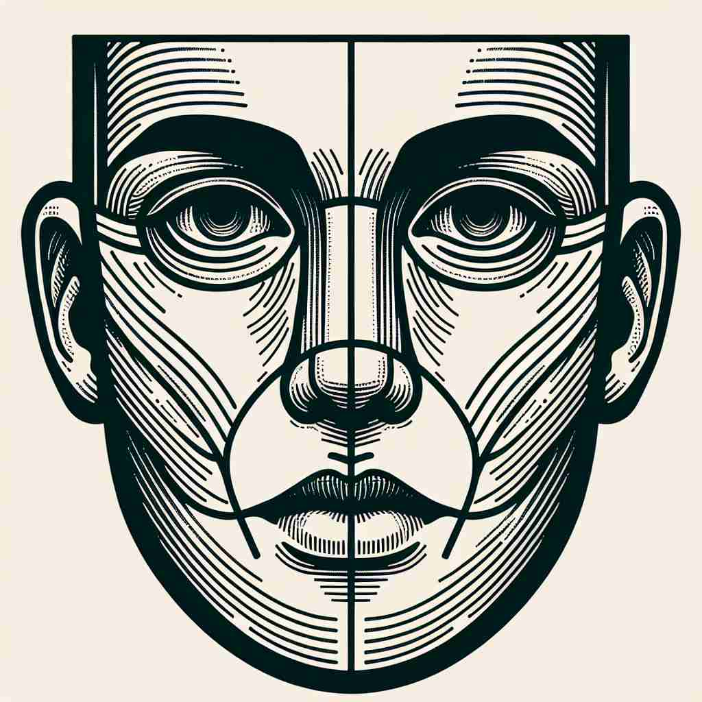

💬 The child wants to show a happy face.

💬 She likes to wash her face every morning.

💬 The clown likes to make a funny face to make the children laugh.

💬 The artist draws the face of a person with great detail.
🔈 [feɪs]
🗝️ n. the front part of the head, where the eyes, nose, and mouth are
🖼️ 在一个温馨的家庭早餐时光中，小女孩坐在镜子前，仔细地看着自己的脸。她用手轻轻触摸着脸部的每一个部分，从眼睛到鼻子再到嘴巴，爸爸在旁边微笑着解释这是我们脸的不同部位。
🔍 通过联想人的'脸'这一核心概念，我们可以更容易理解'face'的多重含义。无论是物体的表面、朝向、直面困难还是表情，都可以与人脸的特征联系起来。记住'face'就是'脸'，然后延伸思考脸的各种特点和作用，这样可以帮助你更好地掌握这个词的不同用法。
💬 The child wants to show a happy face.
💬 She likes to wash her face every morning.
💬 The clown likes to make a funny face to make the children laugh.
💬 The artist draws the face of a person with great detail.
🌳 词根 "fac-" 来自拉丁语，意为 "做、制作"。在 "face" 中则表示 "面" 的意思。
💡 可以通过与汉字 "脸" 的发音相似来记忆 "face"。同时，想象对面做出的表情，这样可以帮助将词根 "fac-" 与面部的概念联系起来。
🗝️ n. the surface or side of an object that is presented to view
🖼️ 在一个精美的展览馆中，一位艺术家正在向参观者展示他的雕塑作品。雕塑有多个侧面。他指着迎接观众的那一面，说：'这是雕塑的正面，这一面会给予观众最直接的视觉冲击。'
💬 The face of the clock shows the time.
❓ 类比人脸是头部最显眼的一面
🗝️ n. the front or most important surface of something
🖼️ 在一个热闹的购物商场里，商店橱窗的装饰格外吸引眼球。一位顾客驻足橱窗前。店员解释说：'这是我们最新款的展示面，诱人的设计和光影效果会吸引顾客进店。'
💬 The north face of the mountain is very steep.
❓ 类比人脸是身体的前部
🗝️ v. to have the front or main part turned in a particular direction
🖼️ 在一个城市公园里，长椅按照人流方向整齐地排放。一位老人坐下眺望着湖面，长椅面向湖水，使他能够享受美丽的风景。
💬 Our house faces the sea.
❓ 类比人转动脸部朝向某个方向
🗝️ v. to confront or deal with a difficult situation
🖼️ 在一个紧张的会议室中，经理面对着一群焦虑的员工。他冷静地说：'我们将直面这个挑战，找到最佳解决方案。'
💬 We must face the consequences of our actions.
❓ 类比直面某人或某事
🗝️ v. to cover the surface of something
🖼️ 在一个漂亮的厨房里，工匠正为一面墙安装瓷砖。他熟练地将每块瓷砖铺上墙面，努力确保墙的表面被完美覆盖。
💬 The building is faced with marble.
❓ 类比脸部覆盖头部前方
🗝️ n. a facial expression
🖼️ 在一个欢快的派对上，一位小丑用夸张的面部表情逗孩子们笑。他滑稽而生动的表情成为派对上最大的亮点。
💬 He made a sad face when he heard the news.
❓ 脸部表情反映内心情感